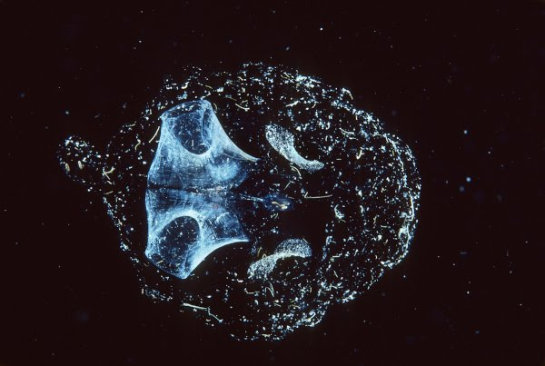

Urocordados Sésseis
Ascídias: Animais fixos no fundo do mar. Na fase adulta, perdem a notocorda e o tubo nervoso, mantendo o corpo protegido por uma "túnica".
Evolução, Sustentação e a Formação dos Vertebrados
Da notocorda à coluna vertebral: a jornada evolutiva

Como você pode ver no esquema ao lado, a grande novidade evolutiva do nosso grupo é a notocorda. Mas nós temos outras três características exclusivas que aparecem em alguma fase da vida:
Ascídias: Animais fixos no fundo do mar. Na fase adulta, perdem a notocorda e o tubo nervoso, mantendo o corpo protegido por uma "túnica".

Biodiversidade: Nem todo tunicado fica preso a uma rocha! Alguns nadam livremente pelas correntes marinhas, filtrando nutrientes da água.

Anfioxo: O "modelo" perfeito do filo. Eles mantêm a notocorda durante toda a vida adulta e costumam viver enterrados na areia da praia.

No filo dos cordados a reprodução é focada na variabilidade genética (sexuada) e a maioria possui sexos separados (dioicos). O ambiente dita a regra: os grupos aquáticos basais costumam liberar gametas na água (fecundação externa), enquanto o desenvolvimento da fecundação interna foi o grande salto para conquistar a terra firme!

O gráfico ao lado mostra exatamente como a complexidade foi aumentando ao longo de milhões de anos a partir de um ancestral comum:
1. Urocordados (Tunicados): O grupo que se ramificou primeiro. Geralmente hermafroditas, realizam fecundação externa e até brotamento.
2. Cefalocordados: Representados pelo anfioxo. Já possuem sexos separados e liberam gametas na água.
3. Vertebrata (Craniados): Aqui o jogo muda. O surgimento do crânio, mandíbula, ossos e respiração pulmonar permitiu que peixes, anfíbios, répteis, aves e mamíferos dominassem o planeta. A fecundação interna (comum nos grupos terrestres) garantiu a proteção dos embriões!